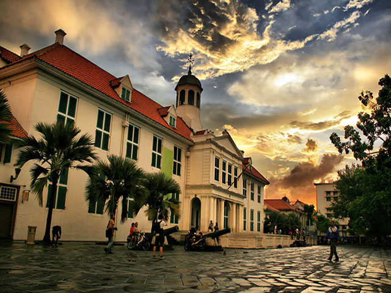
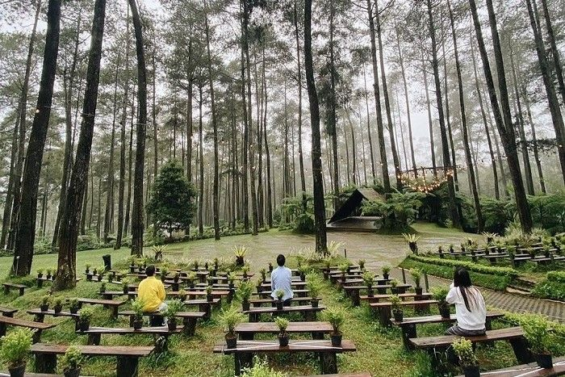
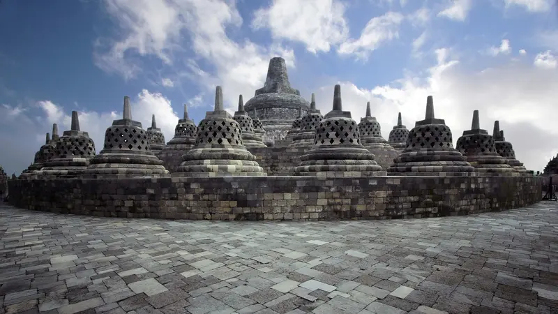
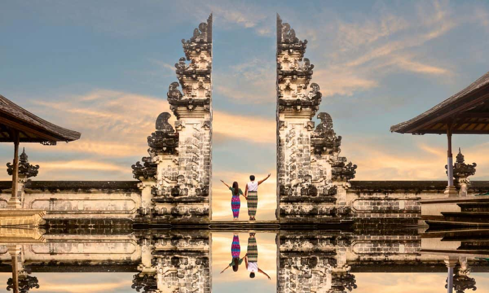

Tempat Wisata Rekomendasi

Kota Tua, West Jakarta City, DKI Jakarta
Lihat Hotel Terdekat

Orchid Forest Cikole, Kabupaten Bandung Barat.
Lihat Hotel Terdekat

Candi Borobudur , Magelang, Jawa Tengah.
Lihat Hotel Terdekat
